Revisades les 12 referències originals. Plantes integrades a Monteverdi, Pachelbel, Mozart i Haydn: tres versions, cinc qualitats, 60 escenes.
Captures reals de Unity. Les vistes de referència són diferents de la càmera del joc. La resta d’arquitectura i il·luminació no s’ha reconstruït en aquesta passada.
Vista conjunta · versió base
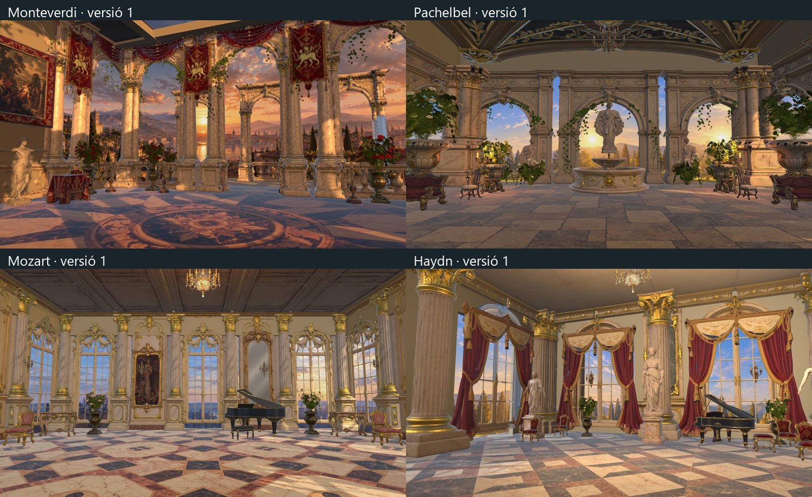
Monteverdi
Flors vermelles i crema en recipients de bronze. Substituïdes les restes dels dos models florals antics i els rams de prova. Es mantenen les enfiladisses existents.
Referència original
Detall actual a Unity
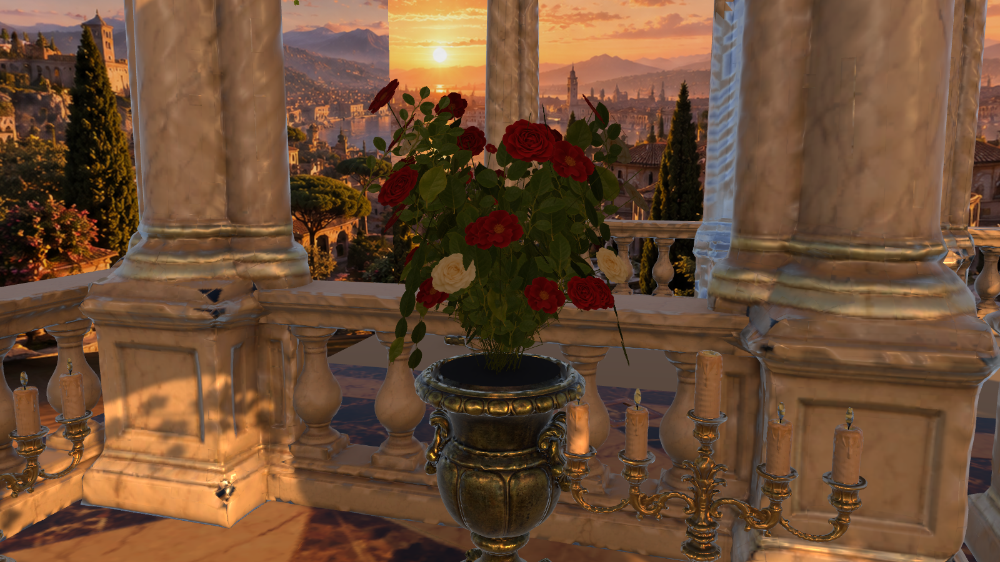
Abans / ara · mateixa càmera
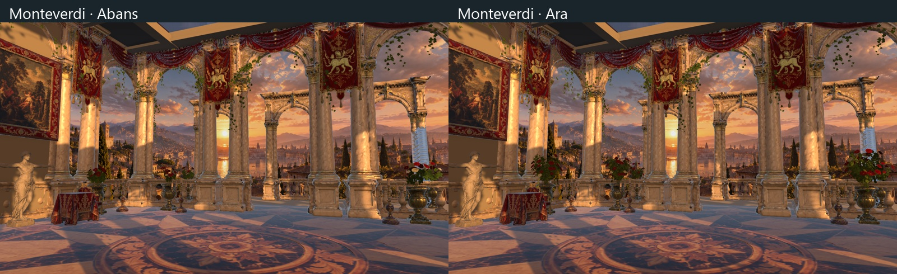
Veure les tres versions
Versió 1
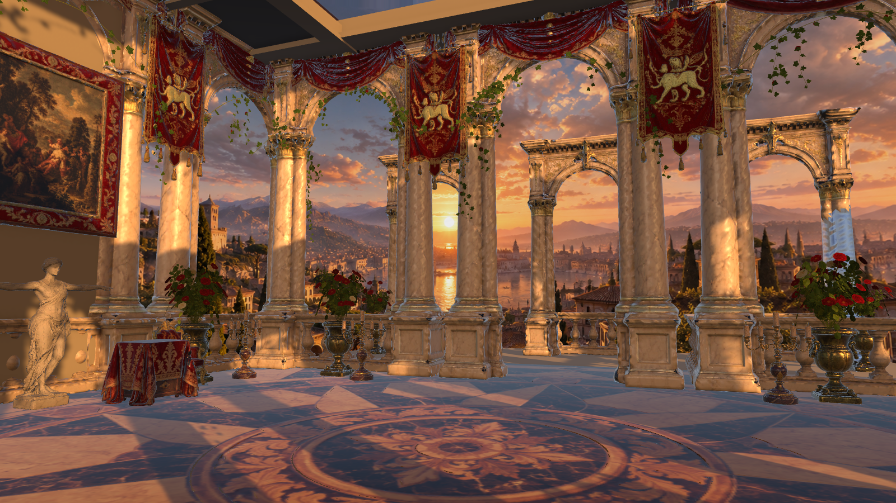
Versió 2
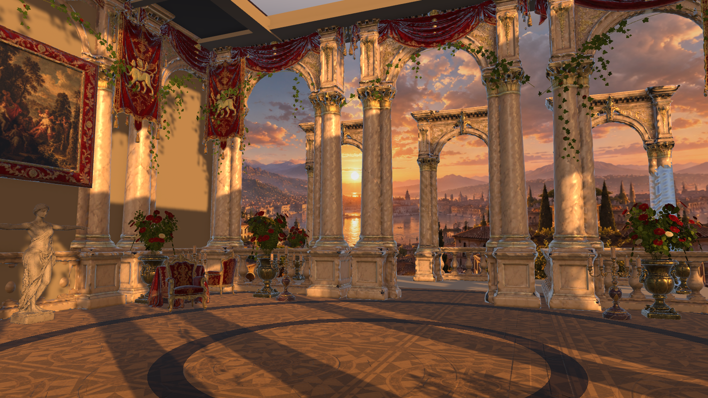
Versió 3
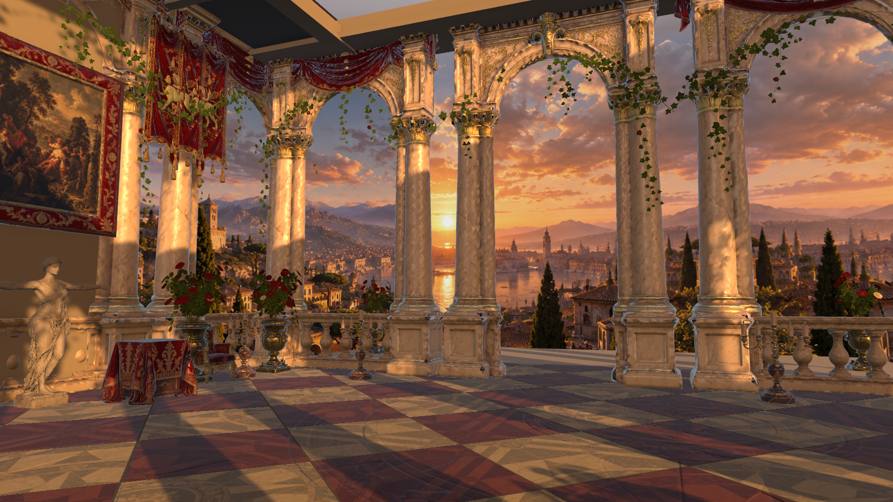
Pachelbel
Arbustos amb flors blanques en lloc del GardenTopiary modelat. Conservats els recipients de marbre. Les plantes s’ancoren al gerro més proper o al terra.
Referència original
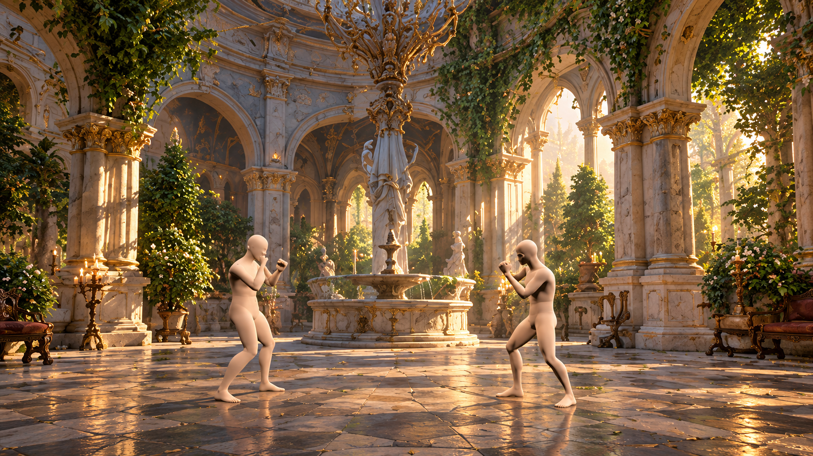
Detall actual a Unity
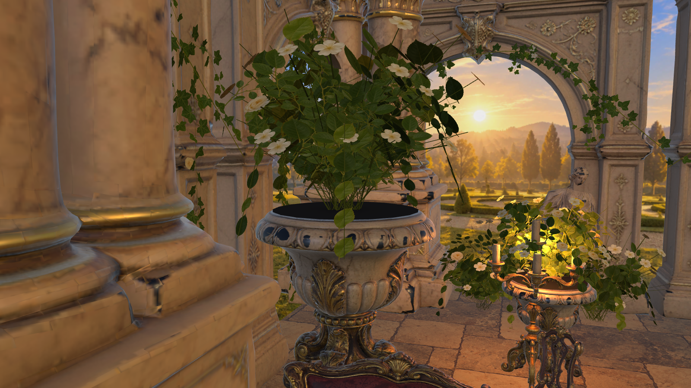
Abans / ara · mateixa càmera
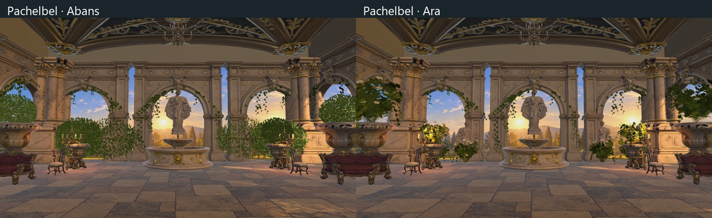
Veure les tres versions
Versió 1
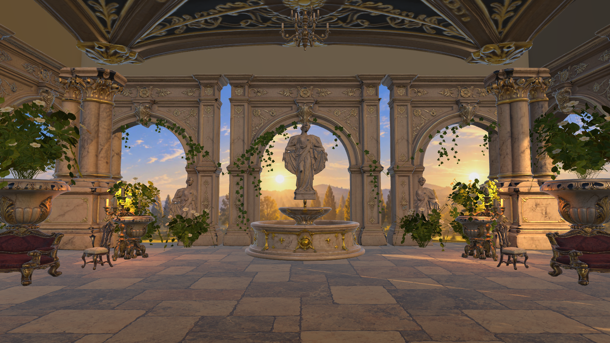
Versió 2
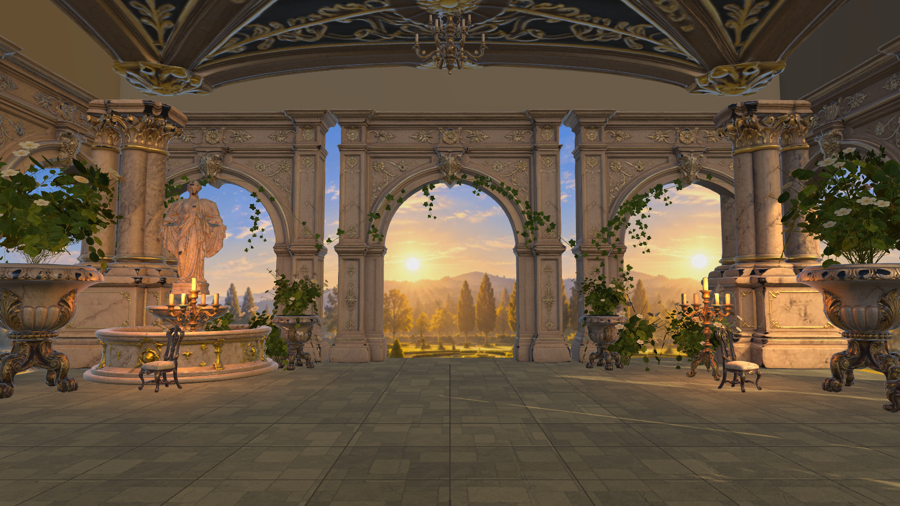
Versió 3
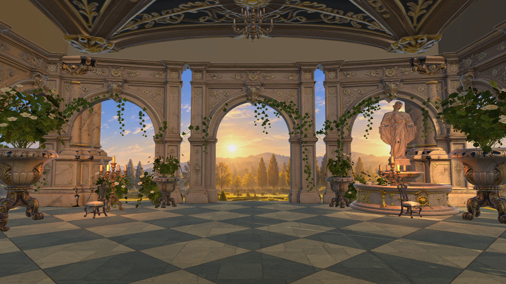
Mozart
Nous rosers de flors rosades i blanques al costat de finestres i piano, en gerros ja existents al projecte.
Referència original
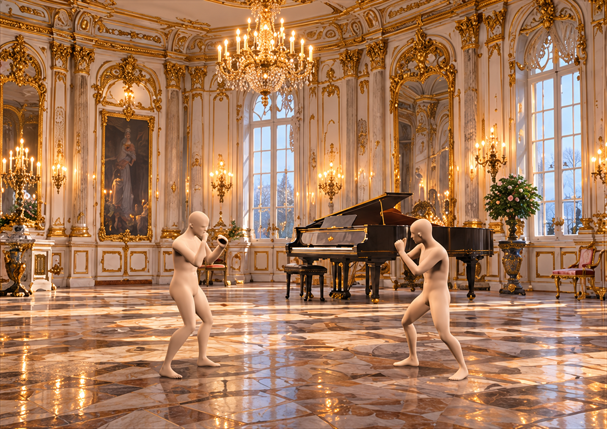
Detall actual a Unity
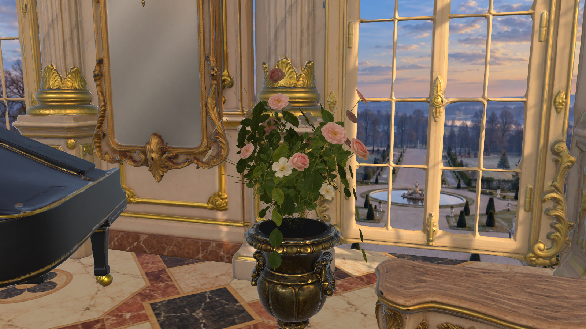
Abans / ara · mateixa càmera
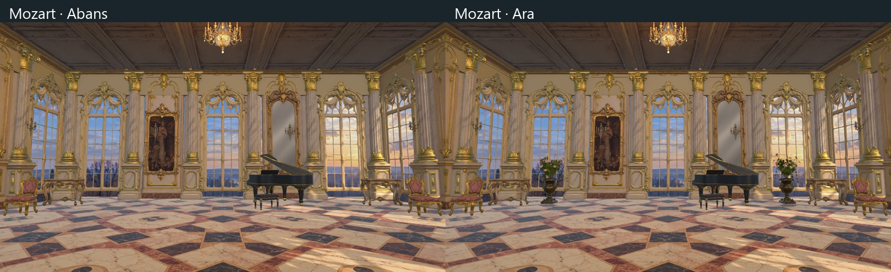
Veure les tres versions
Versió 1
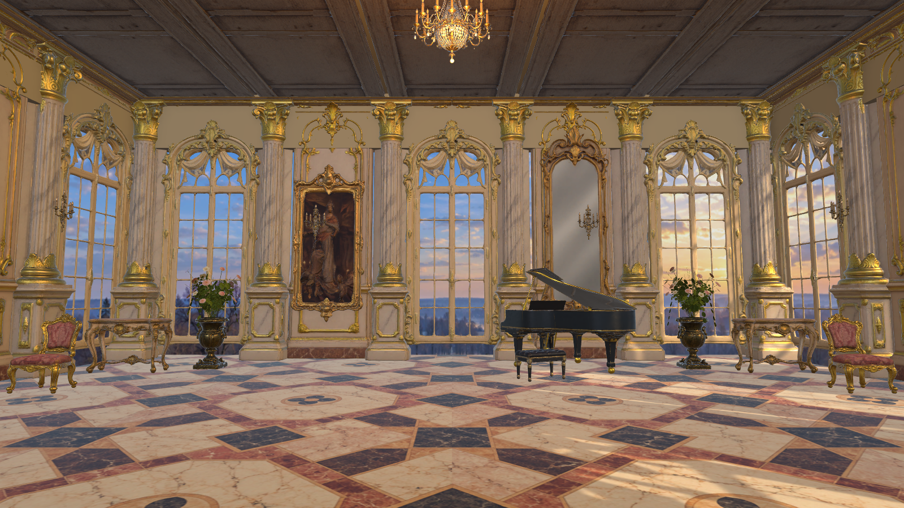
Versió 2
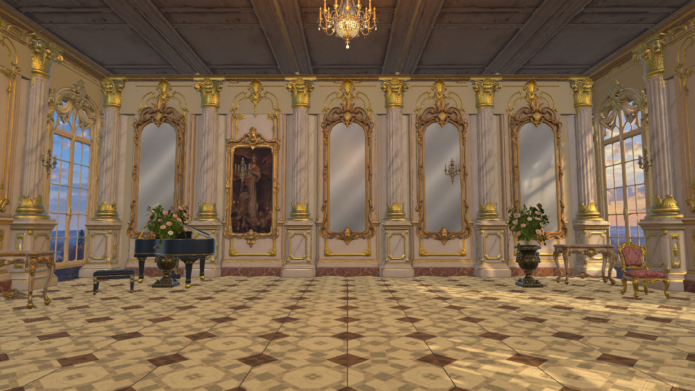
Versió 3
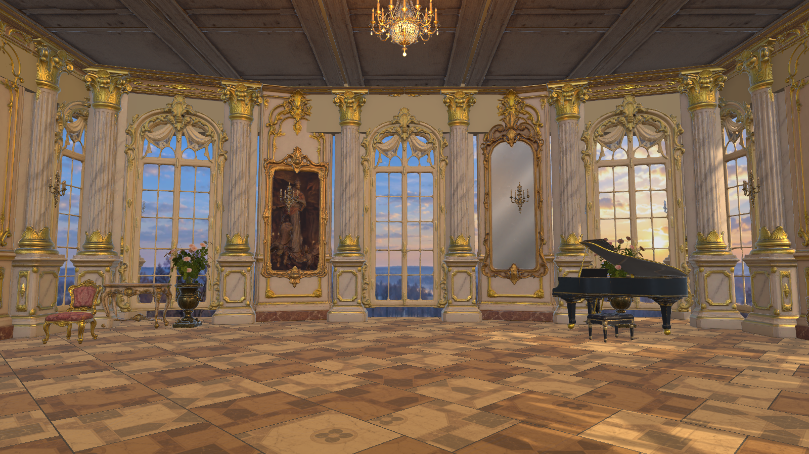
Haydn
Nous arbustos de flors petites blanques i crema al costat de les finestres, seguint la referència.